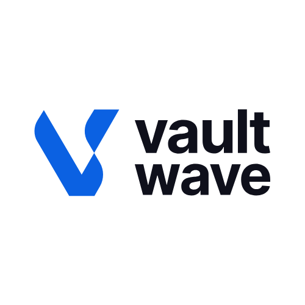

Ariho John Melvin
Founder & Managing Director. Provides strategic leadership, brand direction and client-focused solutions.

Leadership
Vaultwave leadership coordinates strategy, creative, technology, client service and delivery from Kampala.
The information below reflects the leadership details currently published on the live Vaultwave website. Individual Person schema is limited to these page-supported facts.
Founder & Managing Director. Provides strategic leadership, brand direction and client-focused solutions.
Creative Director. Leads strategy and execution for digital products, websites and platforms.
Client Service Lead. Coordinates briefs, timelines and service standards between clients and internal teams.